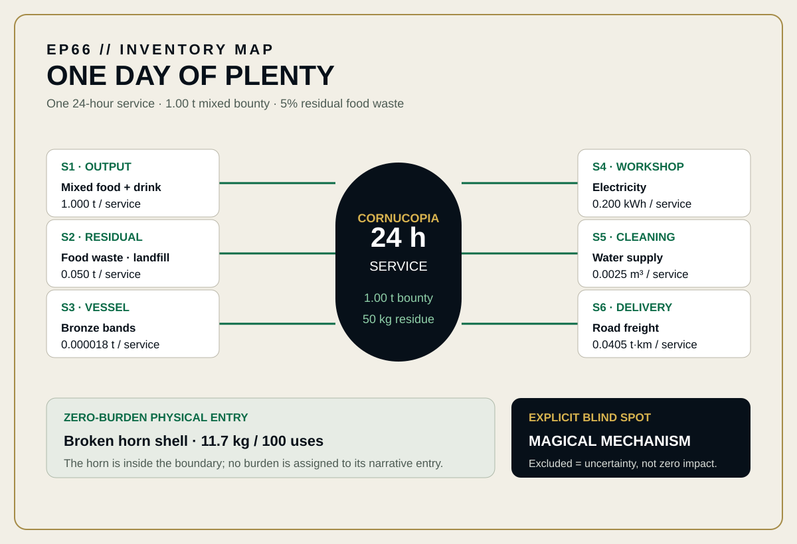
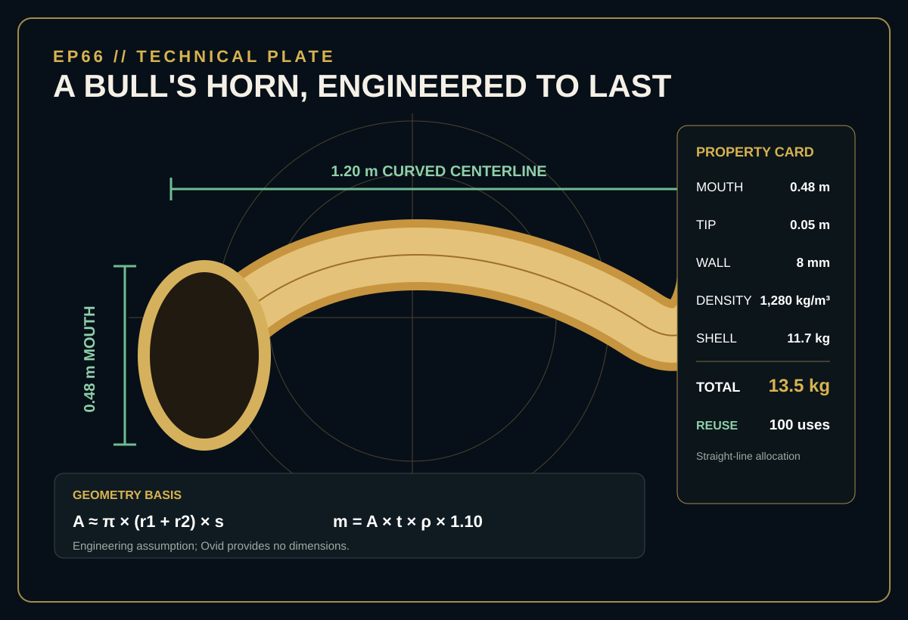
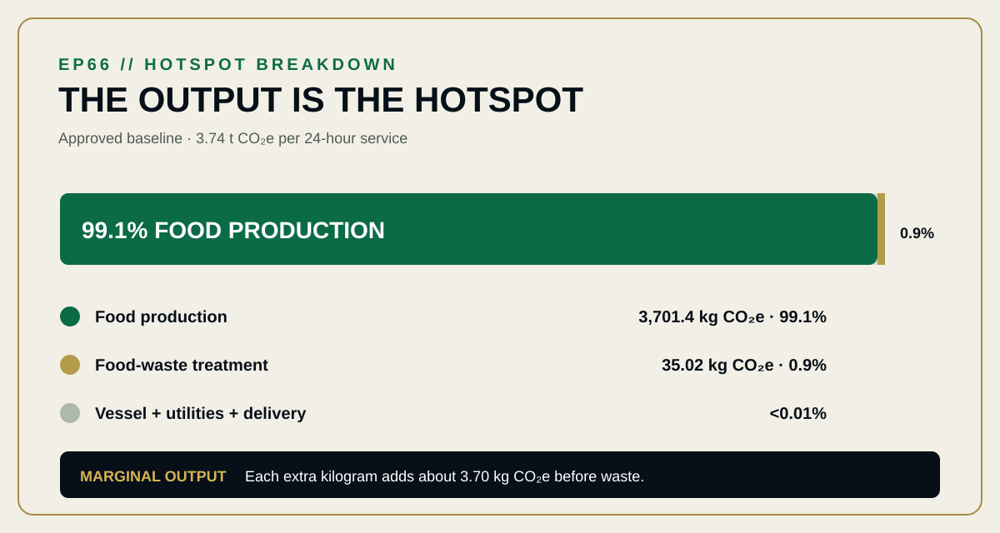

EPISODE #66 · MYTHS & LEGENDS
The Cornucopia
What is the climate shadow of abundance when the horn itself is almost irrelevant?
Editorial reconstruction — not an ISO-conformant or verified footprint.
THE SUBJECT
The horn is inside. Magic is not.
The approved episode models one ceremonial day at the Achelous sanctuary. The service presents 1.00 t of mixed bounty, routes 50 kg of residual food to landfill and allocates the physical vessel over 100 uses. The broken horn enters at zero burden; only its bronze reinforcement, workshop utilities, cleaning and one-off delivery receive measurable physical flows.
The vessel is an engineering reconstruction, not an archaeological claim: 1.20 m curved centerline, 0.48 m mouth, 8 mm wall, 1,280 kg/m³ density, 11.7 kg shell and 13.5 kg total mass. Ovid provides no dimensions. The magical mechanism is deliberately unmodelled: exclusion is uncertainty, not zero impact.
One ceremonial day
24 hours at the Achelous sanctuary.
One tonne of bounty
1.00 t mixed food and drink at the point of use.
Five percent residue
50 kg of food waste is treated in landfill.
The output dominates
Food production contributes 99.1% of the baseline result.
VISUAL MODEL
Six factors enter one day of plenty
The inventory map keeps the physical flows distinct from the excluded magical mechanism. The technical plate freezes the assumed horn geometry and 100-use allocation.


DETAILED LIFE CYCLE INVENTORY
Every measurable flow enters the ledger
The six UK Government 2026 factors reproduce the approved 3.74 t CO₂e headline result. S1 is a generic food-and-drink material-use proxy, not a product-specific agricultural LCA.
| Stage | Component / activity | Activity data | Climate change | Modelling basis |
|---|---|---|---|---|
| Output proxy | Mixed food and drink | 1.000 t / service | 3,701.4 kg CO₂e · 99.1% | UK Government 2026 generic food-and-drink material-use factor: 3,701.40359 kg CO₂e/t. |
| Residual treatment | Food waste to landfill | 0.050 t · 5% of output | 35.02 kg CO₂e · 0.9% | UK Government 2026 food-waste landfill factor: 700.33263 kg CO₂e/t. |
| Vessel | Broken horn shell | 11.7 kg / 100 uses | 0 kg CO₂e | Zero-burden broken horn entry as defined by the approved episode. |
| Vessel reinforcement | Bronze bands | 0.000018 t / service | 0.0688 kg CO₂e · <0.01% | 1.8 kg / 100 uses. UK Government 2026 primary-metals proxy: 3,821.94858 kg CO₂e/t. |
| Workshop | Electricity | 0.200 kWh / service | 0.0369 kg CO₂e · <0.01% | 20 kWh / 100 uses. UK Government 2026 composite generation + T&D + WTT factor: 0.18436 kg CO₂e/kWh. |
| Cleaning | Water supply | 0.0025 m³ / service | 0.00048 kg CO₂e · <0.01% | 0.25 m³ / 100 uses. UK Government 2026 water-supply factor: 0.1913 kg CO₂e/m³. |
| Delivery | Road freight | 0.0405 t·km / service | 0.00515 kg CO₂e · <0.01% | 0.0135 t × 300 km ÷ 100. UK Government 2026 HGV composite direct + WTT factor: 0.12715 kg CO₂e/t·km. |
| Approved baseline total | 3.74 t CO₂e | Per 24-hour service. | ||
Included
Mixed food production proxy, zero-burden broken horn entry, bronze and workshop utilities, allocated one-off road freight and residual food landfill treatment.
Excluded
The magical mechanism, people and feast infrastructure, cooking and refrigeration, and avoided-system credits.
Allocation
The 13.5 kg vessel, 20 kWh workshop electricity, 0.25 m³ cleaning water and one 300 km delivery are allocated straight-line across 100 uses.
Proxy disclosure
The food-and-drink factor is deliberately broad. The episode tests composition uncertainty separately rather than presenting it as product-specific agricultural LCA.
HOTSPOT
Abundance has a 3.74 tonne shadow
Food production contributes 99.1% of the approved baseline, food-waste treatment 0.9%, and vessel plus utilities and delivery together less than 0.01%.

Main result
3.74 t CO₂e
One 24-hour service presenting 1.00 t of mixed food.
Food production
99.1%
The output itself dominates the baseline footprint.
Food-waste treatment
0.9%
Fifty kilograms of residual food go to landfill.
Marginal output
≈3.70 kg CO₂e/kg
Each extra kilogram adds about this much before waste.
Sensitivity A · Output mass
0.50 t → 1.87 t CO₂e
Quiet day.
1.00 t → 3.74 t CO₂e
Baseline.
2.00 t → 7.47 t CO₂e
Feast day.
Only output mass changes; the 5% waste ratio follows it and fixed flows stay fixed.
Sensitivity B · Menu composition
Plant-only proxy → 1.11 t CO₂e/service
1.076 kg CO₂e/kg food.
DEFRA average → 3.74 t CO₂e/service
3.7014 kg CO₂e/kg food.
Celebration-rich → 13.4 t CO₂e/service
13.37 kg CO₂e/kg food.
Physical interpretation
Quantity scales almost perfectly linearly because the output and its 5% residual treatment dominate while the allocated vessel, utilities and delivery stay fixed.
Proxy interpretation
The menu overwhelms the vessel. With the same one-tonne output and fixed flows, the approved composition cases span 1.11 to 13.4 t CO₂e per service.
Model blind spot
No flow is assigned to the magical mechanism. The approved episode explicitly treats that exclusion as uncertainty rather than zero impact.
What the model says
The bounty is the hotspot; quantity scales almost linearly; composition changes the answer far more than the vessel.
THE VERDICT
Endless plenty is only clean when its ingredients are.
The horn almost disappears from the carbon ledger. In the approved reconstruction, the climate result follows what the Cornucopia produces, how much it produces and what that bounty is made of.